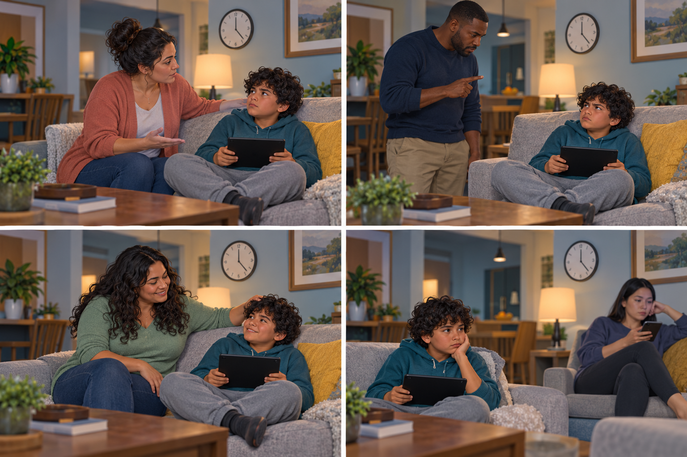
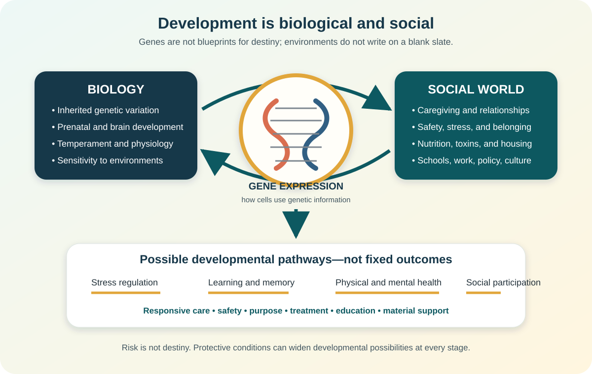
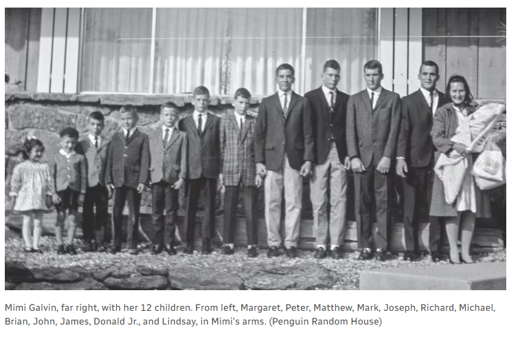

Families prepare children for participation in society
Families do more than produce children. They make decisions about whether and how to parent, create early relationships, model behavior, organize care, and help children develop the capacities they will need in a changing social world.
Family formation includes choices—and unequal opportunities
Reproductive justice links three rights: to have children, not to have children, and to raise children in safe and sustainable communities. Sociology asks not only what people choose, but whether healthcare, money, law, work, housing, disability access, racism, and family policy make that choice possible.
An intentional life without parenting; it is different from postponement or involuntary childlessness.
Pregnancy may be intended, mistimed, or unintended and is shaped by health and social conditions.
ART includes procedures in which eggs or embryos are handled, including IVF. Access is stratified by cost, coverage, geography, and law.
A permanent legal family relationship. Open, semi-open, and closed arrangements differ in information and contact.
State-regulated temporary care centered on safety, well-being, and a permanency plan.
Care by relatives or close family friends can preserve relationships and culture while creating new financial and role demands.
Interactive: choice, constraint, or both?
A couple wants IVF, but their insurance excludes treatment and the nearest clinic is four hours away.
Development is biological, relational, and social
Developmental theories are lenses, not complete portraits of every child. Families use them best when they ask what a child may be learning, what the environment makes possible, and what kind of support fits the child’s current capacities.

Children develop the social self through imitation, play, games, role-taking, and the generalized other. Families provide early roles and audiences.
Across eight psychosocial stages, people negotiate tensions such as trust versus mistrust and identity versus role confusion. Outcomes remain open to later relationships.
Children actively construct knowledge through sensorimotor, preoperational, concrete operational, and formal operational thinking. Stage ages are approximate, not a ranking of worth.
Development occurs through nested systems: immediate relationships, connections among settings, indirect institutions, culture and policy, and change over time.
Children learn by observing models, remembering behavior, reproducing it, and noticing consequences. What adults do can teach more powerfully than what they say.
Development is never only inside the child. Caregiving time, school quality, neighborhood safety, media, work schedules, policy, and inequality shape daily opportunities.
Interactive theory lens
Select a situation to see how different theorists would ask different questions.
A secure base supports exploration and return
Mary Ainsworth’s Strange Situation studied patterns of exploration, separation, distress, and reunion under standardized conditions. Attachment classifications describe an observed relationship pattern in a context; they are not permanent personality types, moral grades for parents, or diagnoses.
| Pattern | What may be observed at reunion | Interpret carefully |
|---|---|---|
| Secure | Seeks comfort and returns to exploration after reassurance. | Security can develop through reliable repair, not perfect caregiving. |
| Avoidant | Appears to minimize proximity or outward distress. | Low visible distress does not necessarily mean low physiological stress. |
| Resistant/ambivalent | Seeks contact but remains difficult to soothe or shows anger. | Behavior reflects an organized strategy under uncertainty. |
| Disorganized | Contradictory, apprehensive, frozen, or disoriented behavior. | This classification requires trained observation and must not be casually assigned. |
Interactive: observe before labeling
A toddler cries when a caregiver leaves, reaches for the caregiver at reunion, calms with comfort, and resumes play.
Warmth and structure create four broad patterns

| Pattern | Responsiveness | Demandingness | Typical approach |
|---|---|---|---|
| Authoritative | High | High | Listens, explains, and holds firm age-appropriate limits. |
| Authoritarian | Lower | High | Prioritizes obedience and control with limited explanation. |
| Permissive/indulgent | High | Lower | Warm and responsive with few consistent limits. |
| Uninvolved | Lower | Lower | Limited responsiveness and monitoring; severe neglect is a safety concern, not merely a “style.” |
Interactive: identify, then improve the response
“Your screen time is over. I know stopping is hard. Choose whether to save now or in two minutes; then we plug the device in.”
Preparation must fit the society children will enter

Name feelings, regulate strong reactions, tolerate frustration, repair harm, and seek help.
Privacy, consent, algorithms, misinformation, scams, permanent records, and respectful participation.
Accurate names, bodily autonomy, consent, boundaries, healthy relationships, and how to report concerns.
Teach similarities and differences without stigma; interrupt bias before silence allows media or peers to teach it.
Age-appropriate tasks, cooperation, money skills, persistence, and the dignity of paid and unpaid care.
Ask, “What changed? What do we know? Who can help? What is the next safe step?”
Epigenetics: experience can influence gene regulation
Epigenetics studies changes in gene activity that do not change the underlying DNA sequence. Chemical processes such as DNA methylation and histone modification can affect how easily cellular machinery reads particular genes. Development, aging, nutrition, toxins, stress, and other exposures can influence these processes.

Avoid the “gene switch” oversimplification
It is tempting to say trauma simply “turns on” schizophrenia or that love can switch a harmful gene off. The science is more complex. Schizophrenia is associated with many genetic variants and environmental factors; no single schizophrenia gene determines the outcome. Stress may affect biological pathways and risk, but most exposed people do not develop schizophrenia, and genes are not destiny.

Interactive: evaluate the claim
“A person with genetic risk will inevitably develop the disorder.”
Apply the chapter
Language for formation and development
- Reproductive justice: rights and resources to have children, not have children, and raise children safely.
- Voluntary childfree living: intentional choice not to parent.
- ART: fertility treatments involving eggs or embryos.
- Kinship care: care by relatives or close family friends.
- Role-taking: imagining another person’s viewpoint.
- Generalized other: internalized community expectations.
- Object permanence: understanding that unseen objects continue to exist.
- Conservation: understanding that quantity may remain stable despite changed appearance.
- Ecological systems: nested social environments shaping development.
- Observational learning: learning through models and consequences.
- Attachment: organized proximity, exploration, distress, and reunion pattern.
- Responsiveness: warmth, attunement, and support.
- Demandingness: expectations, monitoring, and structure.
- Authoritative parenting: high warmth with high age-appropriate structure.
- Epigenetics: gene-regulation changes without alteration of DNA sequence.
- Gene–environment interaction: genetic differences and environments jointly shape outcomes.
References
- Ainsworth, M. D. S., Blehar, M. C., Waters, E., & Wall, S. (1978). Patterns of attachment. Erlbaum.
- Bandura, A. (1977). Social learning theory. Prentice Hall.
- Baumrind, D. (1967). Child care practices anteceding three patterns of preschool behavior. Genetic Psychology Monographs, 75(1), 43–88.
- Bronfenbrenner, U. (1979). The ecology of human development. Harvard University Press.
- Centers for Disease Control and Prevention. (2024). About ART. https://www.cdc.gov/art/about/
- Center on the Developing Child at Harvard University. (n.d.). What is epigenetics? How children’s experiences affect their genes. https://developingchild.harvard.edu/resources/infographics/what-is-epigenetics-and-how-does-it-relate-to-child-development/
- Erikson, E. H. (1963). Childhood and society (2nd ed.). Norton.
- Fausto-Sterling, A. (2012). Sex/gender: Biology in a social world. Routledge.
- Maccoby, E. E., & Martin, J. A. (1983). Socialization in the context of the family. In P. H. Mussen (Ed.), Handbook of child psychology (Vol. 4, pp. 1–101). Wiley.
- Mead, G. H. (1934). Mind, self, and society. University of Chicago Press.
- MedlinePlus Genetics. (2022). What is epigenetics? https://medlineplus.gov/genetics/understanding/howgeneswork/epigenome/
- Piaget, J. (1952). The origins of intelligence in children. International Universities Press.
- Kolker, R. (2020). Hidden Valley Road: Inside the mind of an American family. Doubleday.